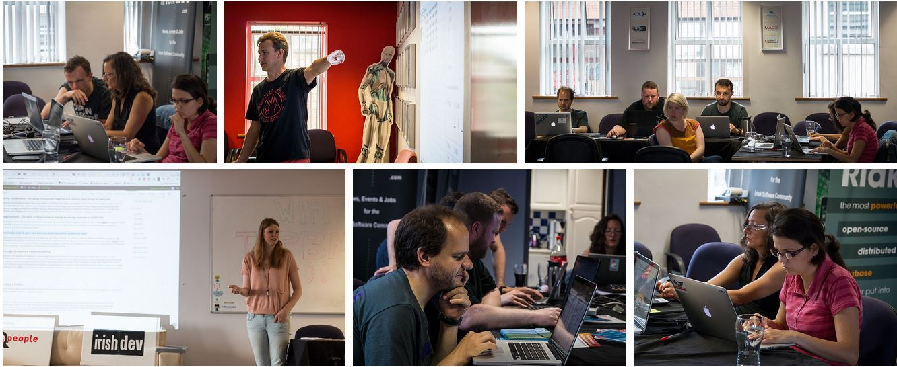

What's this?
We want to help Irish charities that operate in a responsible way by showing you how they spend their money.
Top 5 Charities
| Rank | Charity | Description | Rating |
|---|---|---|---|
| 1 | Trocaire | Supporting people in the developing world to improve their lives | |
| 2 | Concern | Working with the world's poorest people to transform their lives | |
| 3 | Goal | An international humanitarian agency dedicated to alleviating the suffering of the poorest of the poor. | |
| 4 | Focus | Works with people who are homeless or are at risk of losing their homes across Ireland. | |
| 5 | Barnardos | A children's charity who work with children and their families in Ireland |

|
Charity List
Here you can see all the charities in our rating system and how they rank against one another. Use the filters on the left hand side to narrow down your search.
Rating:


Sector:
Search:
Rating System
We rate charities by evaluating two broad areas of performance; their Financial Health and their Accountability & Transparency.
Our ratings show givers how efficiently we believe a charity will use their support today, how well it has sustained its programs and services over time and their level of commitment to being accountable and transparent.
Fundraising Expenses
Percentage of total functional expenses spent on fundraising (lower is better).
| Converted Score: | 10 | 7.5 | 5 | 2.5 | 0 |
|---|---|---|---|---|---|
| % Spent on Fundraising: | 0% - 10% | 10% - 15% | 15% - 20% | 20% - 25% | > 25% |
Fundraising Efficiency
Amount a charity raises for every €1 spent on fundraising (higher is better)
| Converted Score: | 10 | 7.5 | 5 | 2.5 | 0 |
|---|---|---|---|---|---|
| Spend to raise €1 | >€4 | €4 – €3 | €3 – €2 | €2 - €1 | €1 < |
Program Expenses
Percentages of total functional expenses spent on charity work (higher is better).
| Converted Score: | 10 | 7.5 | 5 | 2.5 | 0 |
|---|---|---|---|---|---|
| % Spent on program expenses | >90% | 89 – 75% | 74 – 60% | 59 – 33% | 33% < |
Growth in Program Expenses
Average of the last 3 years compared to this year.
| Converted Score: | 10 | 7.5 | 5 | 2.5 | 0 |
|---|---|---|---|---|---|
| Growth in Program Spend | >5% | 5%-2.5% | 2.5% - 0% | 0% - (2.5%) | (2.5%) < |
Financial Metrics Scorecard
| Score | Marks | |
|---|---|---|
| Fundraising Expenses | 10 | |
| Fundraising Efficiency | 10 | |
| Program Expenses | 20 | |
| Growth in Program Expenses | 10 | |
| Total | 50 |
Transparency Metrics Scorecard
| Yes / No | Marks | |
|---|---|---|
| Independent Board Members | 15 | |
| Published Financials Prepared by Independent Auditor | 20 | |
| Published information on salaries of top staff | 5 | |
| Audited financials easy to find from the website i.e. Annual report | 5 | |
| Graphic making it easy to see where donations are going | 5 | |
| Total | 50 |
Award a Star Rating
Combine the scores out of 70 in the Financial and Transparency metrics above in a graph like this to award a 0, 1, 2, 3, 4 or 5 star rating to each charity.
5 star = 91 – 100
4 star = 81 – 90
3 star = 71 – 80
2 star = 61 – 70
1 star = 50 – 59
0 star = 0 - 49
OUR STORY
We're a not-for-profit group that encourages all Irish charities to be open and accountable.

Why? We want people to be able to make informed decisions about charities. Especially, when making charitable donations. We do this by making data on charities available online in a way that is accessible and easy to understand.
We take the information that charities publish in their annual reports and standardise it. This means you can see what your favourite charity is doing with your donation. And you can compare it with other charities.
We're passionate about improving the openness of charities. The more open they are, the better for the people they help. And the better for us, their supporters.
